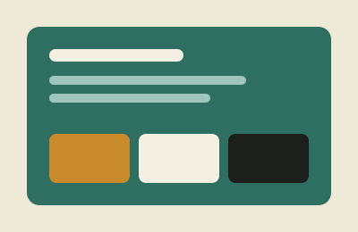
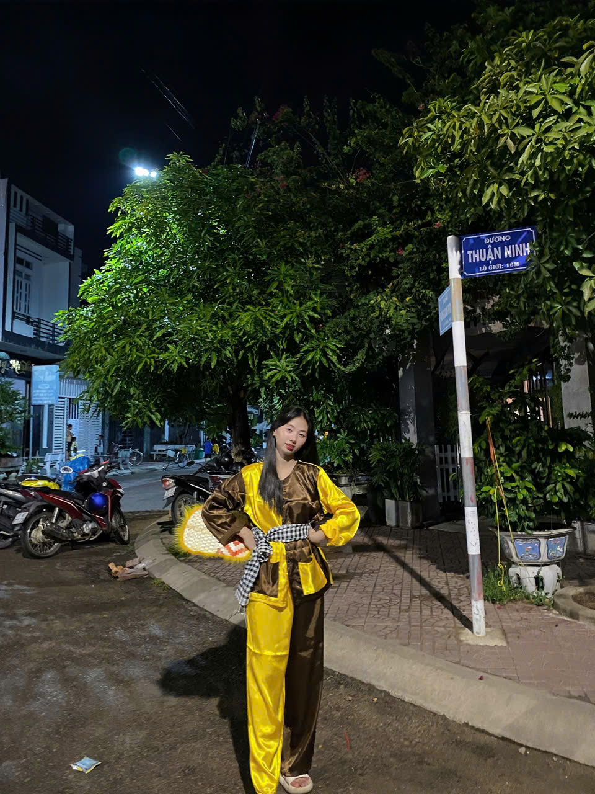
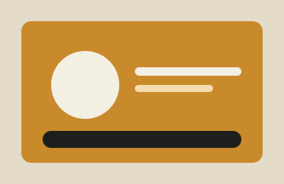
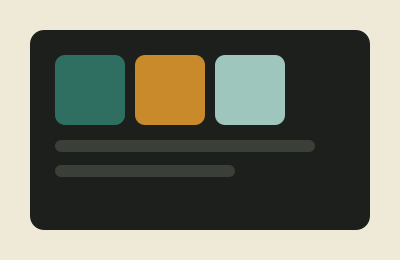

Website Menu Quán Cà Phê
Bài tập thực hành CSS3: xây dựng trang thực đơn hoàn chỉnh với border-image và background layer.
Xem chi tiết →Xin chào! Mình là
Sinh viên Thiết kế Web Front-end Developer UI/UX Enthusiast
Đang ở năm thứ hai của hành trình CNTT, mình thích vai trò của một người kết nối: gom nhặt những ý tưởng ngẫu hứng và dệt nên những giao diện có nhịp điệu, ngăn nắp và tràn đầy sự tinh tế trong từng tương tác

Mình đang học tại Trường Đại học Giao Thông Vận Tải Phân Hiệu TPHCM, ngành Công Nghệ Thông Tin, định hướng Thiết kế & Phát triển giao diện Web. Mình bắt đầu với HTML/CSS từ năm hai, và từ đó vẫn giữ thói quen "vẽ lại" các trang mình thích để hiểu vì sao chúng đẹp. Ngoài giờ học, mình dành thời gian cho nhiếp ảnh đường phố và đọc sách về kiểu chữ. Mình tin rằng một giao diện tốt bắt đầu từ sự quan sát, không phải từ khuôn mẫu có sẵn.

Bài tập thực hành CSS3: xây dựng trang thực đơn hoàn chỉnh với border-image và background layer.
Xem chi tiết →
Đồ án nhóm: giao diện lên lịch học và nhắc việc, thiết kế trên Figma trước khi code.
Xem chi tiết →
Thiết kế logo, bảng màu và hệ chữ dùng xuyên suốt các sản phẩm cá nhân của mình.
Xem chi tiết →Nhập học ngành Kỹ thuật phần mềm, làm quen với những dòng code đầu tiên.
Xây dựng trang portfolio cá nhân đầu tiên, học Figma để phác thảo trước khi code.
Tham gia thực tập tại một studio thiết kế nhỏ, làm việc với các dự án thực tế.
Hoàn thiện đồ án tốt nghiệp, tập trung vào CSS3 nâng cao và trải nghiệm người dùng.
Sau hai năm code theo thói quen, mình quay lại đọc kỹ về descendant, child combinator và pseudo-class — và nhận ra mình đã bỏ lỡ rất nhiều công cụ hữu ích...
Ghi lại quá trình chọn bảng màu, kiểu chữ, và vì sao mình bỏ mẫu "card bo tròn giống hệt nhau" để tìm một bố cục riêng cho trang cá nhân...